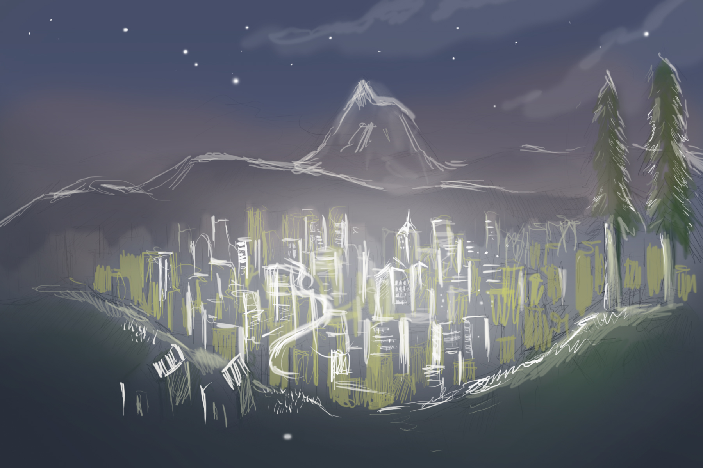
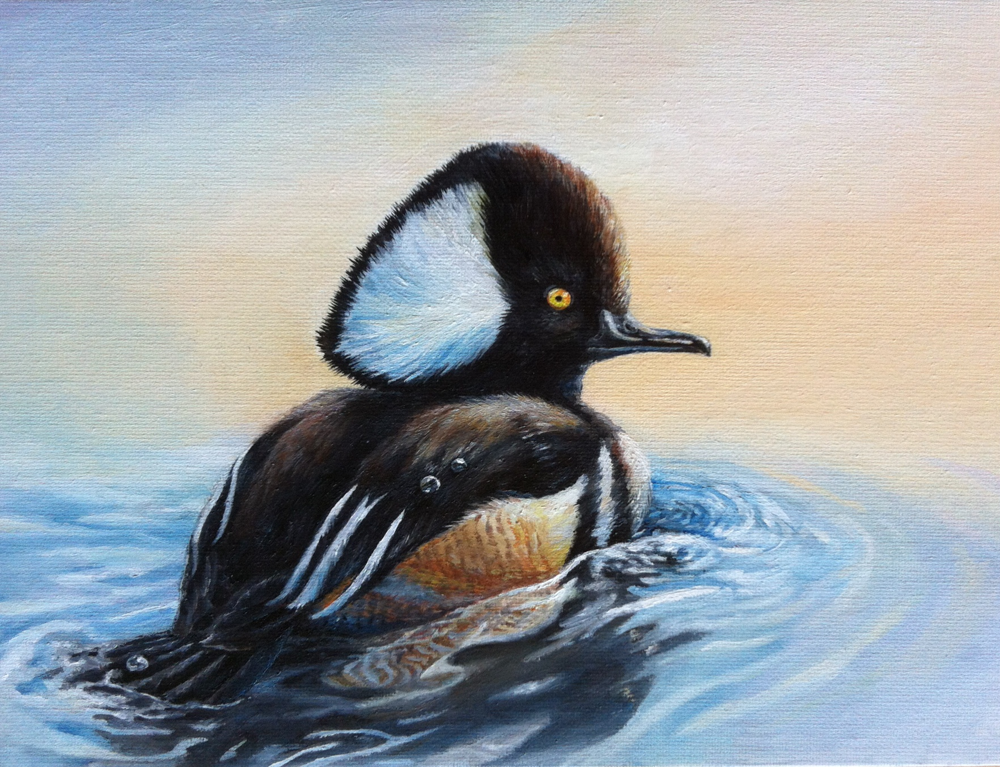

Portland At Night
Digital, 2016

Sentinel
Oil on Canvas Board, 2014
Best of Show in Oregon, Federal Junior Duck Stamp Competition 2014

Mallards at Sunrise
Colored Pencil, 2014
First Place in Oregon, Federal Junior Duck Stamp Competition 2013

Rose
Colored Pencil, 2015

Portrait of a Girl
Colored Pencil, 2014

Starry Night in New York
Oil on Canvas, 2014

Cubist Roses
Acrylic on Canvas, 2014